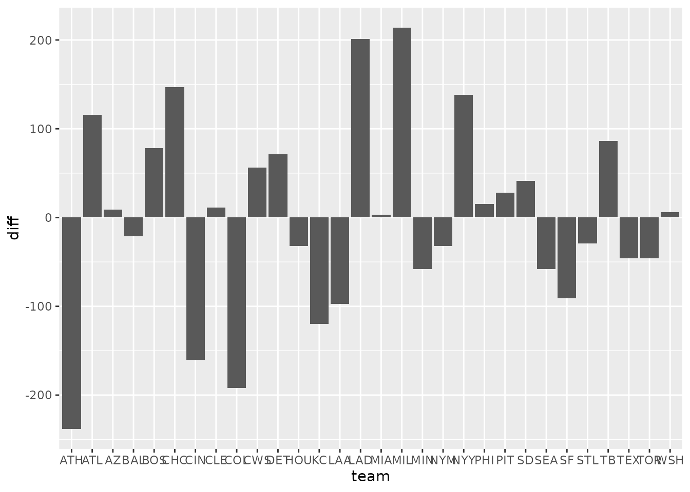
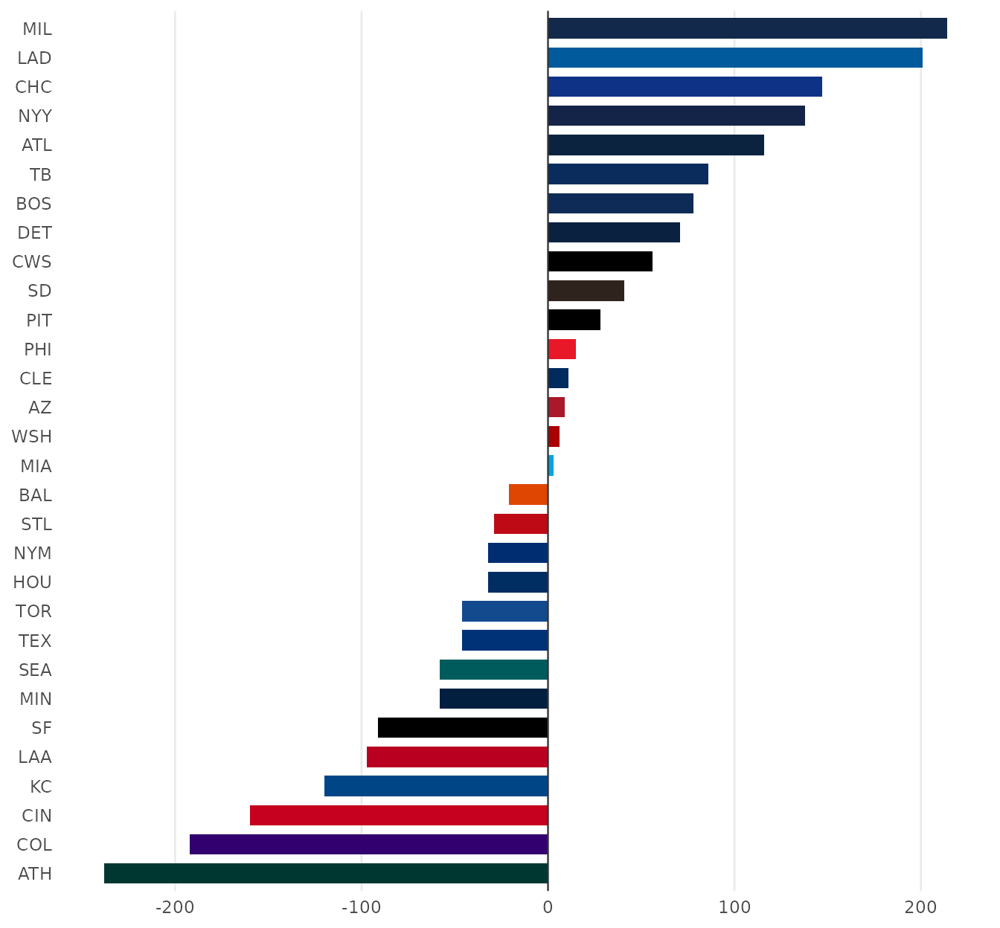
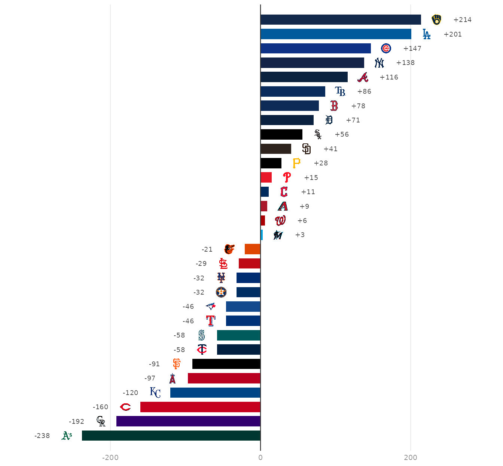
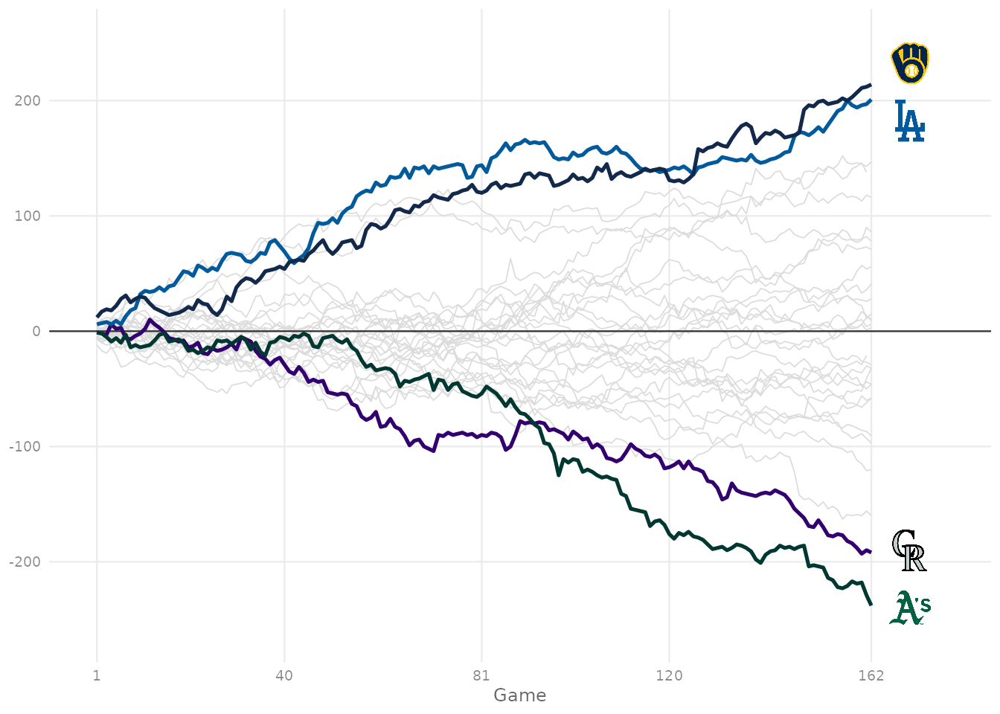

MLB Run Differential
Source:vignettes/recipe-mlb-run-differential.Rmd
recipe-mlb-run-differential.RmdOn this page
The brief: an end-of-season blog post on run differential needs one graphic, 1600 px wide: every team’s final run differential, ranked, plus how the best and worst teams got there over 162 games. The game results come from the MLB Stats API schedule through baseballr; sdvplotR supplies the colors and logos, and patchwork puts the two charts side by side.
library(sdvplotR)
library(ggplot2)
library(dplyr, warn.conflicts = FALSE)
library(patchwork)
season <- 2026
out_dir <- tempfile("sdvplotR-recipe-") # where the exports go; use your own folder
dir.create(out_dir)1. Get the data
Three calls: the regular-season schedule (one row per game, with the final score), the clubs (for abbreviations) and the standings (for a check).
schedule <- baseballr::mlb_schedule(season = season, level_ids = "1") |>
filter(game_type == "R") |>
select(
game_pk, official_date, status_coded_game_state,
teams_home_team_id, teams_away_team_id, teams_home_score, teams_away_score
)
teams <- baseballr::mlb_teams(season = season, sport_ids = 1) |>
select(team_id, team_abbreviation)
official <- baseballr::mlb_standings(season = season, league_id = "103,104") |>
transmute(team_id = team_records_team_id, run_differential = team_records_run_differential)The output below uses a snapshot of these calls taken on October 05, 2026 (baseballr 2.0.0), because the MLB Stats API is not called when this site is built.
Stacking the home and away sides gives one row per team per game; a running sum of the margin is the season line. Two checks before trusting it. A postponed or suspended game is listed more than once (on the day it was scheduled and the day it was finished), so only final games are kept, once each, on the day they finished. And the totals must match the official standings.
finals <- schedule |>
filter(status_coded_game_state == "F") |> # final, including games completed early
arrange(desc(official_date)) |>
distinct(game_pk, .keep_all = TRUE)
games <- bind_rows(
transmute(
finals, official_date, game_pk,
team_id = teams_home_team_id, margin = teams_home_score - teams_away_score
),
transmute(
finals, official_date, game_pk,
team_id = teams_away_team_id, margin = teams_away_score - teams_home_score
)
) |>
arrange(official_date, game_pk) |>
group_by(team_id) |>
mutate(game = row_number(), run_diff = cumsum(margin)) |>
ungroup()
stopifnot(identical(class(games$team_id), class(teams$team_id)))
totals <- games |>
group_by(team_id) |>
summarise(diff = sum(margin), games = n()) |>
inner_join(teams, by = "team_id") |>
rename(team = team_abbreviation) |>
arrange(diff, team) # tied totals need a second key to keep one order every run
check <- inner_join(totals, official, by = "team_id")
stopifnot(nrow(check) == 30, all(check$diff == as.integer(check$run_differential)))
tail(totals, 5)
#> # A tibble: 5 × 4
#> team_id diff games team
#> <int> <int> <int> <chr>
#> 1 144 116 162 ATL
#> 2 147 138 161 NYY
#> 3 112 147 162 CHC
#> 4 119 201 162 LAD
#> 5 158 214 162 MIL2. The first draft
Thirty bars in alphabetical order, the way a pivot table would hand them over.

Alphabetical order hides the ranking, thirty abbreviations crowd the axis, and one color says nothing about who is who.
3. Rank it, turn it sideways, color it by team
Horizontal bars give every team a readable row,
reorder() turns the chart into a ranking, and team colors
from scale_fill_sdv() tie each bar to a club; it reads the
MLB Stats API abbreviations (AZ, CWS) as they
are. A zero line anchors the diverging bars.
ggplot(totals, aes(diff, reorder(team, diff))) +
geom_col(aes(fill = team), width = 0.7) +
geom_vline(xintercept = 0, color = "grey20", linewidth = 0.4) +
scale_fill_sdv(sport = "mlb") +
labs(x = NULL, y = NULL) +
theme_minimal() +
theme(panel.grid.major.y = element_blank(), panel.grid.minor = element_blank())
4. Logos at the bar ends
The abbreviations go; each logo sits just past the end of its bar
(right of a positive bar, left of a negative one) with the value beside
it. height is a share of the panel’s height, so 0.026 is a
little under one row of thirty.
bars <- function(logo_height = 0.026) {
pad <- 0.045 * diff(range(totals$diff)) # the gap between a bar's end and its logo, in runs
ranked <- mutate(totals, y = row_number(), side = if_else(diff >= 0, 1, -1))
ggplot(ranked, aes(y = y)) +
geom_col(aes(x = diff, fill = team), orientation = "y", width = 0.72) +
geom_vline(xintercept = 0, color = "grey20", linewidth = 0.4) +
geom_sdv_logos(aes(x = diff + side * pad, team = team), sport = "mlb", height = logo_height) +
geom_text(
aes(x = diff + side * 2.1 * pad, label = sprintf("%+d", diff), hjust = if_else(side > 0, 0, 1)),
size = 2.4, color = "grey30"
) +
scale_fill_sdv(sport = "mlb") +
scale_x_continuous(limits = range(totals$diff) + c(-3.6, 3.6) * pad) +
scale_y_continuous(expand = expansion(add = 0.7)) +
labs(x = NULL, y = NULL) +
theme_minimal(base_size = 9) +
theme(
axis.text.y = element_blank(),
axis.text.x = element_text(color = "grey55"),
panel.grid.major.y = element_blank(),
panel.grid.minor = element_blank()
)
}
bars()
5. The season line
A total hides the path. The running run differential by game number shows when the best and worst teams pulled away: every club in light grey for context, the top two and bottom two in their colors, with a logo at the end of each highlighted line. Two lines can finish close together, so any logo that would overlap its neighbor is nudged apart.
best_worst <- c(tail(totals$team, 2), head(totals$team, 2))
focus <- games |>
inner_join(select(totals, team_id, team), by = "team_id") |>
filter(team %in% best_worst)
arc <- function(logo_height = 0.07) {
ends <- focus |>
group_by(team) |>
slice_max(game, n = 1) |>
ungroup() |>
transmute(team, x = game + 8, y = run_diff) |>
arrange(y)
gap <- 0.11 * diff(range(games$run_diff)) # the least room between two logos, in runs
for (i in seq_len(nrow(ends))[-1]) {
short <- gap - (ends$y[i] - ends$y[i - 1])
if (short > 0) {
ends$y[i - 1] <- ends$y[i - 1] - short / 2
ends$y[i] <- ends$y[i] + short / 2
}
}
ggplot(games, aes(game, run_diff, group = team_id)) +
geom_line(color = "grey86", linewidth = 0.3) +
geom_hline(yintercept = 0, color = "grey20", linewidth = 0.4) +
geom_line(aes(color = team), data = focus, linewidth = 0.9) +
geom_sdv_logos(aes(x = x, y = y, team = team), data = ends, inherit.aes = FALSE, sport = "mlb", height = logo_height) +
scale_color_sdv(sport = "mlb") +
scale_x_continuous(breaks = c(1, 40, 81, 120, 162), limits = c(0, 178)) +
scale_y_continuous(expand = expansion(mult = 0.1)) +
labs(x = "Game", y = NULL) +
theme_minimal(base_size = 9) +
theme(
axis.title.x = element_text(color = "grey40"),
axis.text = element_text(color = "grey55"),
panel.grid.minor = element_blank()
)
}
arc()
6. One graphic for the blog
patchwork puts the two charts side by side (+), sets
their widths (plot_layout()) and adds one headline over
both (plot_annotation()). The title states the finding,
each panel’s own title says how to read it, and the caption carries the
source. At 8 x 5 in and 200 dpi the file is exactly 1600 x 1000 px.
best <- tail(totals, 1)
worst <- head(totals, 1)
clubs <- team_reference("mlb")
club_name <- function(abbr) clubs$team_name[match(clean_team_abbrs(abbr, sport = "mlb"), clubs$team_abbr)]
panel_title <- theme(plot.title = element_text(face = "bold", size = 9.5))
graphic <- (bars() + labs(title = "Final run differential") + panel_title) +
(arc() + labs(title = "Running total by game: the top two and bottom two") + panel_title) +
plot_layout(widths = c(1, 1.15)) +
plot_annotation(
title = sprintf("The %s finished %+d, the best run differential in baseball", club_name(best$team), best$diff),
subtitle = sprintf(
"Runs scored minus runs allowed, %d MLB regular season. The %s were last at %+d.",
season, club_name(worst$team), worst$diff
),
caption = "Data: MLB Stats API via baseballr | Chart: sdvplotR",
theme = theme(
plot.title = element_text(face = "bold", size = 15),
plot.subtitle = element_text(color = "grey40", size = 9.5),
plot.caption = element_text(color = "grey45", size = 7.5),
plot.background = element_rect(fill = "white", color = NA)
)
)
blog <- file.path(out_dir, "mlb_run_differential_1600x1000.png")
ggsave(blog, graphic, width = 8, height = 5, dpi = 200)
magick::image_info(magick::image_read(blog))[c("width", "height")]
#> # A tibble: 1 × 2
#> width height
#> <int> <int>
#> 1 1600 1000
magick::image_read(blog)